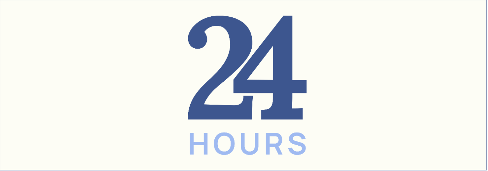

twentyfour · Brand evolution
From 24 Hours to twentyfour: making a calm brand actually feel calm
V1 said “calm” but looked busy. V2 strips the identity back to one serif, one accent and lots of space, so the brand feels the way the app is meant to.

- Role
- Brand & product designer
- Scope
- Name, logo, colour, type, UI
01 · Why change it
The brand and the product were saying different things
The app promises a gentle day with no pressure. V1 used heavy numerals, a clock face and five competing colours, which read more like a countdown. Once the product UI took shape, the identity had to follow it.
02 · What changed
Side by side
ElementV1 · 24 HoursV2 · twentyfour
{{ r.k }}
{{ r.v1 }}
{{ r.v2 }}
03 · Colour
Five colours down to one accent
In V1 every colour asked for attention. In V2 orange only marks what matters right now, so it works as a signal rather than decoration.
V1
- {{ s.hex }}
V2
- #FDFBF9 · Base
- #FF6F1E · Now
- #171717 · Ink
04 · In the product
The brand now lives inside the screens
V1’s identity stopped at the splash screen. In V2 the same serif, softly stacked cards and orange “now” state run through every screen.
05 · What I learned
A brand is tested in the product, not on the board
- 01Restraint reads as calm. Fewer colours and lighter type did more than any “calm” tagline.
- 02Colour should carry meaning. One accent tied to “now” is easier to read than five brand colours.
- 03Design the identity with the UI. V1 looked good alone but didn’t carry into the screens.